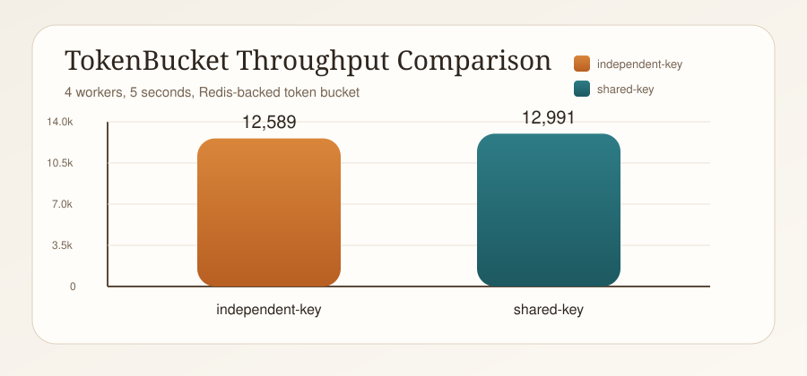
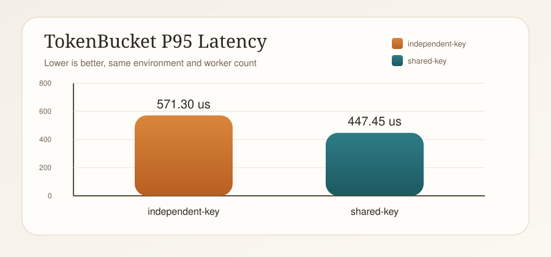
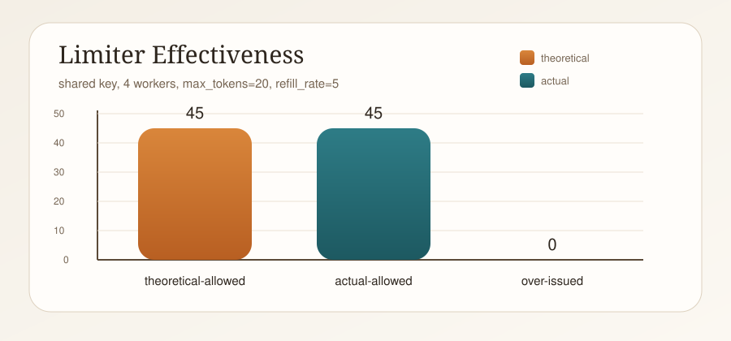
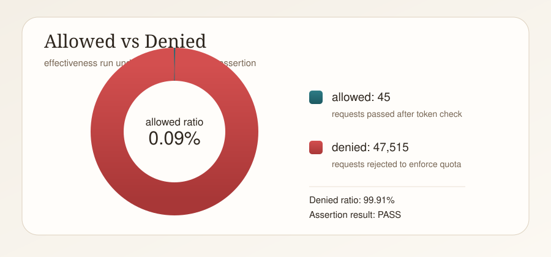

压测报告
Redis 分布式限流组件
一页结论
- 当前 Docker 测试环境下，Redis 令牌桶限流吞吐约为
12.6k到13.0k QPS。 - 热点 key 严格有效性压测中，理论最大放行
45次，实际放行45次。 over_issued=0.00，本次压测没有观察到超发。- 功能验证、FastAPI 接入、指标导出、
pytest回归测试全部通过。
关键指标
吞吐范围
12.6k+
热点 key QPS
12991
理论放行
45
超发量
0.00
测试环境与范围
| 项目 | 值 |
|---|---|
| 运行方式 | Docker Compose |
| Redis | redis:7-alpine |
| 应用栈 | C++17 + hiredis + pybind11 + FastAPI |
| 限流路径 | Redis Lua Token Bucket |
| 验证链路 | test、pytest、bench、/metrics |
压测范围
- 吞吐压测：
4worker，5s，覆盖独立 key 与热点 key。 - 限流有效性压测：
4worker，5s，热点 key，max_tokens=20，refill_rate=5。 - 严格断言：
max-over-issue=0、max-over-issue-ratio=0。
吞吐结果
| 场景 | Workers | 时长 | 总请求数 | QPS | 平均延迟(us) | P95(us) | P99(us) | 错误数 |
|---|---|---|---|---|---|---|---|---|
| 独立 key | 4 | 5s | 62945 | 12589.00 | 316.24 | 571.30 | 823.68 | 0 |
| 热点 key | 4 | 5s | 64957 | 12991.40 | 304.11 | 447.45 | 751.25 | 0 |

QPS 对比：两组场景都稳定在 12k+，热点 key 未出现明显下降。

P95 延迟对比：当前这组数据下，热点 key 延迟没有明显恶化。
限流有效性结果
| 场景 | Workers | 时长 | Max Tokens | Refill Rate | 理论放行 | 实际放行 | 超发量 | 超发比例 | 拒绝率 | 断言结果 |
|---|---|---|---|---|---|---|---|---|---|---|
| 热点 key | 4 | 5s | 20 | 5/s | 45.00 | 45 | 0.00 | 0.000000 | 0.9991 | PASS |

理论放行与实际放行完全一致，超发量为 0。

热点 key 下大多数请求被正确拒绝，说明限流规则被严格执行。
验证快照
令牌桶功能验证
PASS
Redis 故障降级
PASS
FastAPI /healthz
PASS
FastAPI /metrics
PASS
pytest 集成测试
5 PASS
有效性断言
PASS
复现命令
docker compose build docker compose up -d redis docker compose run --rm test remote docker compose run --rm -e REDIS_HOST=redis-unavailable test fallback docker compose run --rm pytest docker compose run --rm bench --workers 4 --duration 5 docker compose run --rm bench --workers 4 --duration 5 --shared-key docker compose run --rm bench \ --mode effectiveness \ --workers 4 \ --duration 5 \ --shared-key \ --max-tokens 20 \ --refill-rate 5 \ --max-over-issue 0 \ --max-over-issue-ratio 0